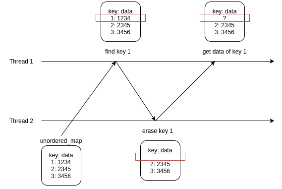

Thread Safety of Unordered_map (Shared_timed_mutex)
Prerequisite
- Thread
- Mutex
- Thread safety
Problem
unordered_map 을 사용한 멀티 스레드 프로그래밍을 하던 중 잘못된 메모리 접근으로 인한 문제로 인해 프로그램이 죽는 상황에 직면했다. 기본적으로 STL Container 는 하나의 스레드에 의한 쓰기 접근을 허용하고 다중 스레드에 의한 읽기 접근을 허용하기 때문에 unordered_map의 데이터를 업데이트 하는 부분에 mutex를 적용하여 문제를 해결하려 시도 했다. 보통은 이렇게 해결이 되지만 unordered_map 에서는 조금 다른 문제가 엮여 있었다.

위의 그림과 같이 Thread 1과 Thread 2가 unordered_map 이라는 데이터를 사용한다. 이때 Thread 1은 unordered_map 의 데이터를 읽기 위해 key 를 이용해 key 1에 해당하는 데이터가 있는지 확인하고 데이터를 얻는다.
그런데 문제는 Thread 2에서 Thread 1 이 key 를 이용해 찾고 난 직후 key 1 에 해당하는 데이터를 지워버리고 Thread 1 에서는 지워진 key 1를 이용해 데이터에 접근하려는 문제에 직면하게 된다.
이러한 다중 스레드에 의한 데이터 접근시에도 문제가 없도록 하는 것을 thread safety 라 하는데 이러한 경우 어떻게 해결해야 할까?
shared_timed_mutex (since C++14)
위의 문제를 해결하기 위해서는 key 를 이용해 데이터가 있는지 확인하고 데이터를 얻는 과정을 mutex를 이용하여 lock 을 걸고 수행하면 된다.
하지만 읽기를 위해 데이터를 독점하는 것이 조금 찝찝했다. 다수의 스레드 에서 읽기를 해도 데이터의 변경은 일어나지 않는데도 불구하고 독점하여 하나의 스레드 에서만 읽기를 할수 있게 하는것이 비효율적으로 보였다.
이러한 문제를 해결하기 위해서 shared_timed_mutex를 이용한 스택오버플로우의 답변을 발견했다. shared_timed_mutex 는 두가지의 접근 수준을 제공한다. 하나는 여러 스레드에서 접근을 허용하는 수준이며 하나는 일반 mutex 와 같이 하나의 스레드에서의 접근을 허용하는 수준이다.
- shared - several threads can share ownership of the same mutex.
- exclusive - only one thread can own the mutex.
다시 문제로 돌아와 이를 적용해보면 데이터를 변경할 때에는 unique_lock을 이용하여 하나의 스레드에서의 접근만을 허용하게 하고, 데이터를 읽을 때에는 shared_lock을 이용하여 여러 스레드에서 접근을 허용하게 한다. 이러면 데이터의 변경중에는 읽기가 불가능하고 데이터의 읽기 중에는 변경이 불가능 하지만 여러 스레드에서 데이터의 읽기는 가능하게 하는 효율적인 데이터 관리가 가능해 진다. 아래 코드는 이를 간단히 구현한 코드이다.
#include <shared_mutex>
using mutex_type = std::shared_timed_mutex;
using read_only_lock = std::shared_lock<mutex_type>;
using updatable_lock = std::unique_lock<mutex_type>;
mutex_type mtx_for_m;
std::unordered_map<int, std::string> m;
// code to update map
{
updatable_lock lock(mtx_for_m);
m[1] = "one";
}
// code to read from map
{
read_only_lock lock(mtx_for_m);
std::cout << m[1] << '\n';
}
Summary
- STL Container는 하나의 스레드에서 쓰기 다중 쓰레드 읽기를 허용한다.
unordered_map은 key 를 확인 하는 과정에서 data race condition이 발생한다.- 읽기와 쓰기 모두
mutex가 필요할 경우에는shared_timed_mutex를 이용해서 다중 쓰레드 읽기를 허용할 수 있다.
Reference
- https://stackoverflow.com/questions/38061067/data-race-with-stdunordered-map-despite-locking-insertions-with-mutex
- https://en.cppreference.com/w/cpp/thread/shared_timed_mutex
- https://stackoverflow.com/questions/9685486/unordered-map-thread-safety
- https://en.cppreference.com/w/cpp/container#Thread_safety